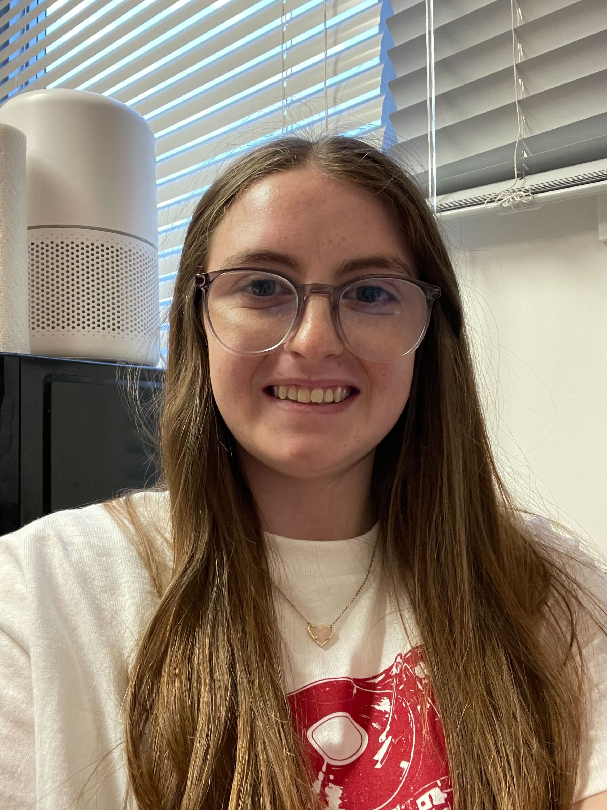
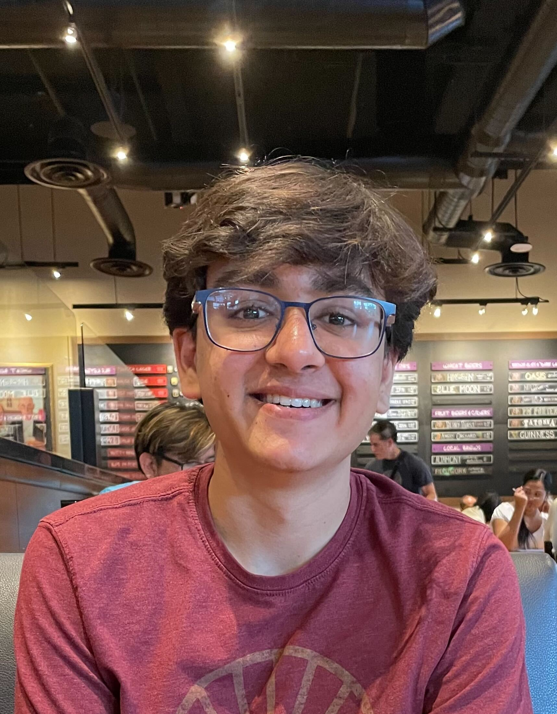
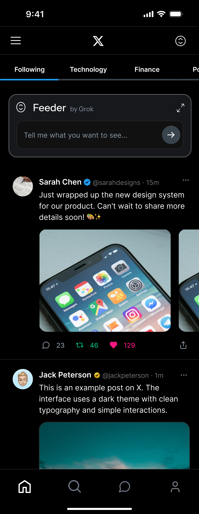
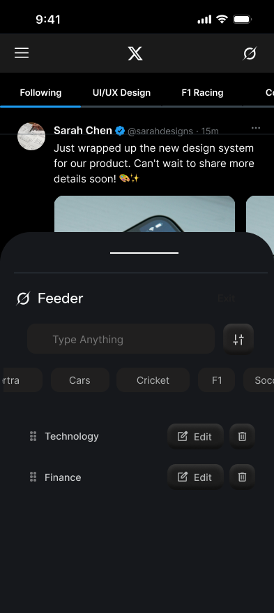
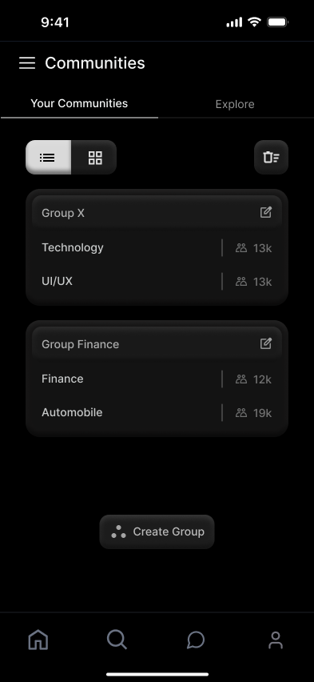
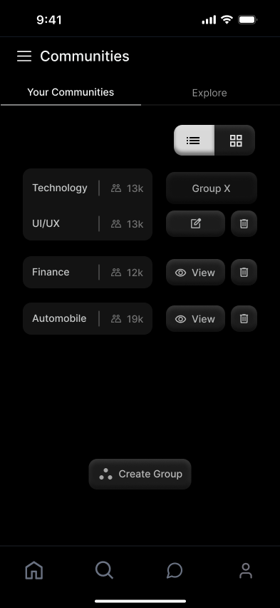
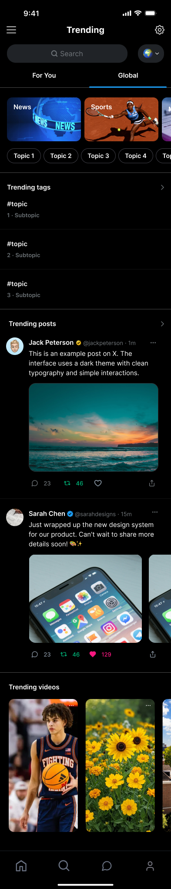
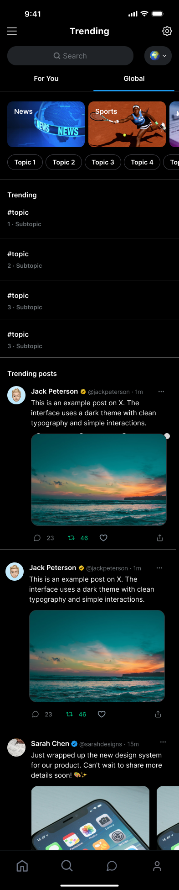
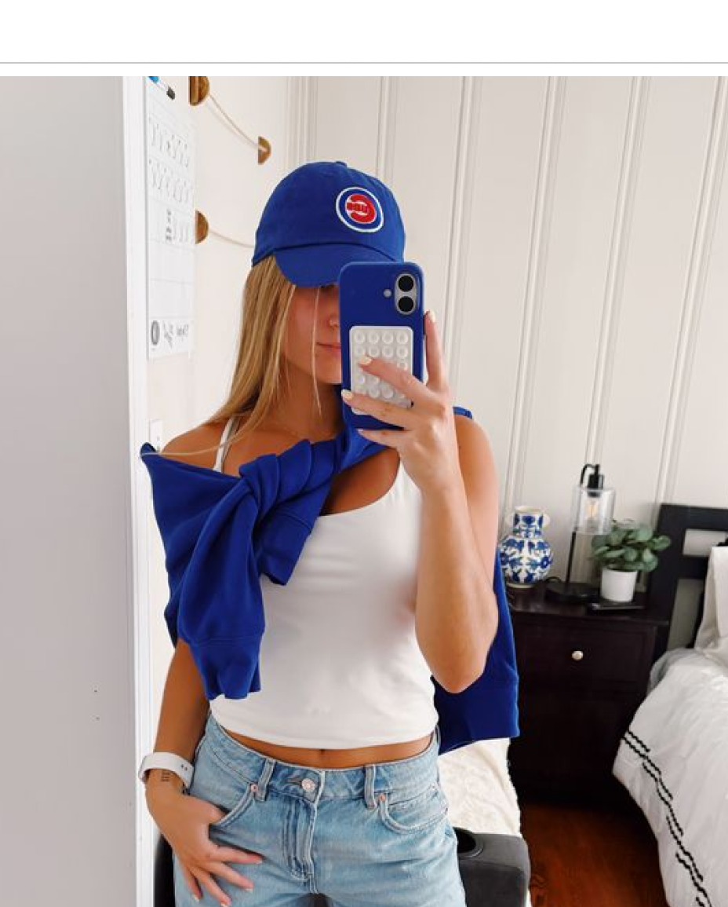

Checkpoint 3
Our Team


Overview
We elevated our lo-fi flows into polished, pixel-accurate screens grounded in our design system.
We ran 11 A/B tests to validate layout, navigation, and interaction decisions with real users.
We connected our hi-fi screens into interactive prototypes to demonstrate the redesigned end-to-end flow.
Let's go back to the beginning of April…
Key Findings
Phase 02
Participants
Winners
Version A vs. Version B


Version A vs. Version B


Version A vs. Version B


Phase 03
Connecting our hi-fi screens into interactive end-to-end flows.
01Home Page
Interactive prototype of the redesigned home feed.
02Feeder
AI-powered topic feeder for personalized timeline curation.
03Search / Trending
Refined trending and search experience.
04Chat
Streamlined direct messaging flow.
05Profile
Profile, posts, and repost interactions.
06Notifications
Cleaner notifications hub.
07Communities
Communities discovery and grid view.
08Settings
Unified, simplified settings page.
Persona

Experienced User
27 · Sports Marketing · Chicago, IL
Interests: Sports, Pop Culture, Politics
Sarah was born and raised in Chicago, and attended UIUC for college. She loves everything sports-related, and works in Social Media marketing for the Chicago Cubs. She lives a fast-paced lifestyle and is very active online. She likes staying caught up on all current news, no matter the topic. She creates posts on X for work, but also loves to use it for personal use.
User Journey
Persona
Social User
30 · Market Analyst · Stockholm
Most Used Apps: X, Instagram, Reddit & WhatsApp
Hobbies: DJ Mixing, Painting & Photography
Normal Nora is a social human being, she likes to spend time with family and friends. Instagram is a great place for her, but it has a different use case when compared to 'X'. She feels that 'X' must allow friends to share textual ideas with each other and publicly, which is not a major selling point of Instagram.
User Journey
Outcome
Reflections
"Design thinking is a must + trust your team"
Daria Meshcheriakova"There are many useful ways to incorporate AI into UX design, such as creating low-fis, but human design thinking is still the best tool."
Megan Weiss"I really enjoyed diving into the design process early in the semester and adapting our designs through A/B testing!"
Amy Wang"User evaluations made me think about design in a different way. It's not about what you want. It's about what users want."
Dhruv Sawhney"Working with Figma Make and high-level prototyping was a great learning experience."
Nipun Chandra Surnilla